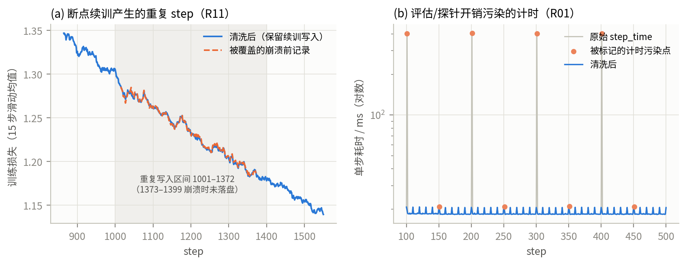
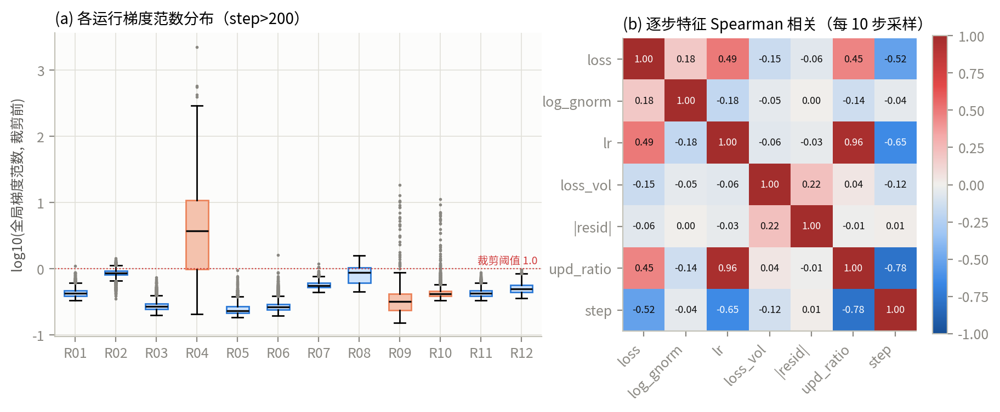
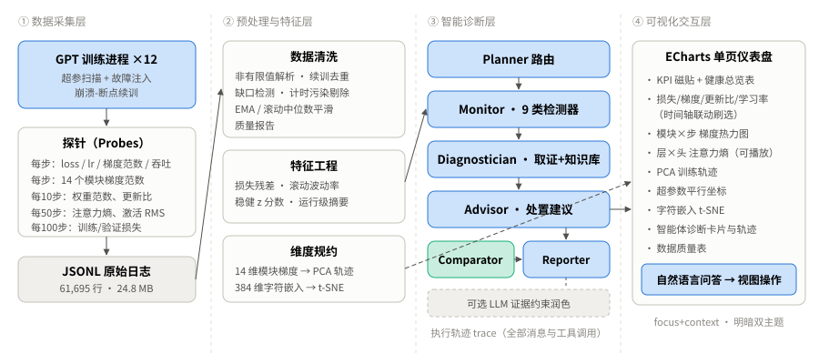

大语言模型（LLM）训练是典型的高成本、长周期、强不确定性的工程活动。一次千亿参数级别的预训练往往需要数千张加速卡连续运行数周，单日算力成本可达数十万元。在这一场景中，训练过程本身就是需要被“观察”的对象：工程师需要随时回答“训练是否健康”“异常何时开始、源自哪里”“现在应当继续、回滚还是调整超参数”这三类问题。Meta 在 OPT-175B 的训练日志中记录了超过 35 次人工重启，多数源于损失尖峰与硬件故障[1]；BLOOM、PaLM 等报告也提到需要通过跳过数据批次、回滚检查点来化解损失尖峰[2,3]。这些案例说明，训练监控并非“锦上添花”，而是直接决定算力浪费与项目成败的核心环节。
从可视化与交互的角度看，训练监控具有三个鲜明的数据特征：其一是多尺度时序，指标以“步”为单位高频产生（每秒数步至数十步），同时又需要在数千步尺度上观察趋势；其二是高维结构化，除标量损失外，每个模块的梯度、权重、更新比，每个注意力头的熵，都构成具有“层—模块—头”层级结构的高维张量序列；其三是多运行对比，超参数搜索与消融实验要求在同一视图中比较数十个运行。由此，本文抽象出以下业务需求：
（1）信息过载与信号淹没。逐步损失天然带有小批量噪声，真实的异常信号往往被淹没在噪声中；而当指标扩展到逐模块、逐头之后，指标数量从个位数膨胀到数百个，人工逐一盯盘不可行。
（2）“看见”不等于“看懂”。损失曲线上的一个尖峰可能由学习率调度错误、上游数据损坏、数值溢出等完全不同的原因造成，处置方式截然不同：学习率问题需要回滚权重，而数据问题只需剔除对应分片。仅凭损失曲线无法区分二者，需要跨指标的联合取证。
（3）日志本身不可靠。真实训练日志存在断点续训造成的重复步、崩溃时的半行写入、评估开销污染的计时、发散后的 NaN/Inf 等“脏数据”。直接可视化原始日志会产生误导性的图形（例如重复步造成曲线回折，评估步造成周期性的伪吞吐下降）。
（4）多运行比较的视觉混乱。当 12 个以上运行叠加在同一坐标系，若为每个运行分配一种颜色，既超过人眼可区分的类别色上限，也使色觉障碍用户无法辨认。
TensorBoard[4]是最早普及的训练可视化工具，以标量曲线、直方图和计算图为主，其局限在于：视图之间缺乏联动，没有跨运行的结构化比较，也不具备任何自动诊断能力。Weights & Biases[5]与 MLflow 等实验管理平台提供了更完善的多运行比较与平行坐标图，但本质上仍是“指标仪表盘”：异常需要用户自己发现，告警规则需要用户手写阈值，并且模型内部的细粒度表征（如逐头注意力熵）需要用户自行埋点。学术界的可视分析工作，如 DeepTracker[6]对 CNN 训练过程的多层级可视化、Hohman 等人对深度学习可视分析的综述[7]，以及 BertViz[8]对 Transformer 注意力的可视化，都在某一方面做得比较深，但要么针对 CNN 而非 Transformer，要么只分析训练完成后的静态模型，很少把训练过程的动态监控和根因诊断放在同一个系统里。
近两年，基于大模型的智能体被用于数据分析，例如 LIDA[9]可以从数据自动生成可视化，Data Interpreter[21]等工作可以执行多步分析。不过把这类方法直接用于训练诊断，会碰到两个问题：一是大模型直接读原始曲线时容易编造数字；二是诊断结论缺乏可追溯的证据链。因此本文采用“统计检测器 + 取证工具 + 知识库评分”作为确定性的诊断主干，大模型只是可选的语言润色层，所有结论都以结构化证据为约束。
针对上述需求与痛点，本文设计并实现了 TrainScope 系统，主要工作包括：（1）构建了一套带全量探针的 GPT 训练框架，通过 12 组真实训练运行（含 3 类真实注入故障）产生约 24.8 MB、61,695 行原始日志的多维监控数据集；（2）设计了面向训练日志的数据清洗与特征工程流程，并以 PCA 和 t-SNE 对高维梯度与嵌入数据进行规约；（3）实现了一个以 focus+context 为核心配色策略、包含 9 类联动视图的交互式仪表盘；（4）实现了 Planner–Monitor–Diagnostician–Advisor–Comparator–Reporter 多智能体诊断工作流与自然语言视图操控；（5）通过案例分析揭示了学习率、预热、裁剪、正则化对训练动力学的影响规律，并对异常检测的效果进行了事件级评估。
训练语料。本文采用 Karpathy 公开的 TinyShakespeare 语料[10]（莎士比亚剧作合集，1,115,394 个字符，65 个不同字符，SHA-256 前缀 86c4e6aa），按 9:1 切分为训练集与验证集。字符级语言建模任务计算量小、可在单卡上完成多组完整训练，同时保留了 Transformer 训练的全部典型动力学现象（预热、过拟合、注意力头特化等），适合作为大模型训练监控的“可控缩微实验场”。
模型与训练配置。模型为 Pre-LN 结构的 GPT 解码器[11]：基线 6 层、6 头、隐维 384、上下文 256，参数量 10.80M；扩容配置为 8 层、8 头、隐维 512，参数量 25.39M。优化器为 AdamW（β=(0.9,0.95)，权重衰减 0.1），学习率采用“线性预热 + 余弦衰减至 10%”，bf16 混合精度，单卡 NVIDIA RTX 4090，每个运行 2,500 步（批量 64×256，共 4,096 万字符，约 40.8 个 epoch 当量）。
实验设计。为了让监控数据覆盖健康、次优、故障三种状态，本文设计了表 1 所示的 12 组运行。其中 R09、R10、R11 为真实注入的故障：R09 在第 1200–1229 步将学习率临时放大 25 倍，模拟配置热更新错误；R10 在第 1800–1839 步将训练标签替换为均匀随机字符，模拟上游数据管道损坏；R11 在第 1400 步让进程真实退出，再从第 1000 步的检查点续训，从而在日志中产生真实的重复步与丢失记录。故障的起止位置已知，可以作为异常检测评估的真值。
| 运行 | 峰值学习率 | 预热 | 裁剪 | 批量 | dropout | 规模 | 设计意图 |
|---|---|---|---|---|---|---|---|
| R01_baseline | 1e-3 | 200 | 1.0 | 64 | 0.2 | 6L/384 | 基线 |
| R02_lr3e-4 | 3e-4 | 200 | 1.0 | 64 | 0.2 | 6L/384 | 学习率偏低 |
| R03_lr3e-3 | 3e-3 | 200 | 1.0 | 64 | 0.2 | 6L/384 | 学习率偏高 |
| R04_lr1e-2_noclip | 1e-2 | 200 | 关 | 64 | 0.2 | 6L/384 | 过高学习率且不裁剪 |
| R05_nowarmup | 3e-3 | 无 | 1.0 | 64 | 0.2 | 6L/384 | 去除预热 |
| R06_noclip | 3e-3 | 200 | 关 | 64 | 0.2 | 6L/384 | 去除梯度裁剪 |
| R07_bs16 | 1e-3 | 200 | 1.0 | 16 | 0.2 | 6L/384 | 小批量 |
| R08_nodropout | 1e-3 | 200 | 1.0 | 64 | 0 | 6L/384 | 去除正则化 |
| R09_fault_lrspike | 1e-3 | 200 | 1.0 | 64 | 0.2 | 6L/384 | 注入：学习率×25（1200–1229） |
| R10_fault_corrupt | 1e-3 | 200 | 1.0 | 64 | 0.2 | 6L/384 | 注入：标签污染（1800–1839） |
| R11_crash_resume | 1e-3 | 200 | 1.0 | 64 | 0.2 | 6L/384 | 注入：崩溃@1400，续训@1001 |
| R12_large | 6e-4 | 200 | 1.0 | 64 | 0.2 | 8L/512 | 扩容 |
探针与采集频率。训练脚本在不改变训练语义的前提下植入了四类探针（表 2）。模块级指标把参数归为 14 个可解释的模块组（embed、Li.attn、Li.mlp、head），梯度范数在裁剪之前计算，以便如实反映梯度尖峰。注意力熵和激活统计在一个固定的验证探针批次（8×256 字符）上计算，这样不同步之间可以直接比较。更新比 ‖ΔW‖/‖W‖ 通过在优化器更新前后对参数做快照得到，它度量的是“这一步实际把权重改动了多少”，是判断学习率是否合适的关键指标[12]。
| 文件 | 频率 | 字段 | 维度/步 |
|---|---|---|---|
| scalars.jsonl | 每步 | loss, lr, grad_norm(裁剪前), step_time, tok/s, 显存峰值 | 8 |
| layers.jsonl | 每步 / 每10步 | 14 模块梯度范数；14 模块权重范数与更新比 | 14 / 42 |
| probes.jsonl | 每50步 | 层×头注意力熵、逐层残差流 RMS 与最大激活 | 48（基线） |
| evals.jsonl | 每100步 | 训练/验证损失（各 20 批次均值） | 2 |
| embed_tok.npy | 结束时 | 字符嵌入矩阵 | 65×384 |
原始日志直接来自训练进程，包含多种真实“脏数据”。本文按以下顺序进行清洗，每一步的统计结果写入质量报告（表 3），在仪表盘中也可以查看。
（1）解析与类型规整。JSON 不支持 NaN/Inf，训练脚本在损失非有限时以字符串形式写出，清洗时将其还原为 IEEE 浮点并标记；进程崩溃时可能留下半行 JSON，解析失败的行被计数后丢弃。
（2）续训去重与丢失记录。R11 在第 1400 步崩溃。由于日志采用带缓冲的追加写，且只在每 100 步时显式刷新，进程被强制终止时缓冲区中第 1373–1399 步的记录尚未落盘，直接丢失；而从第 1000 步检查点恢复后，第 1001–1372 步又被写入了第二次（共 372 个重复步）。由于续训后的轨迹才是最终模型真实经历的轨迹，本文按 step 去重并保留最后一次写入。图 2(a) 对比了被覆盖的崩溃前记录与保留的记录：两者损失水平接近但逐步取值不同，因为续训恢复了数据采样器的随机状态，而 dropout 的随机掩码无法逐位复现。如果不做去重直接按写入顺序画线，曲线会在第 1399 步“折返”到第 1001 步，读者很容易误以为训练出现了倒退。
（3）缺口检测。以 step 的连续整数序列为参照统计缺失步。R11 崩溃时丢失的 1373–1399 步在续训中被重新执行和记录，所以清洗后缺失步为 0；如果只看崩溃前的文件，这 27 步就是一个缺口。这说明“去重保留最后写入”的策略同时修复了丢失和重复两类问题。
（4）计时污染修正。训练脚本在第 50k 步之后运行探针、在第 100k 步之后运行评估，这部分耗时会被计入下一步的 step_time，使吞吐曲线出现规律的周期性“下跌”（图 2(b)）。此外，第一步包含 CUDA 上下文初始化，耗时高出两个数量级。本文将 step%50==1 的步、首步以及超过中位数 20 倍的步标记为 timing_contaminated，在计算吞吐统计和检测吞吐下降时剔除，但在损失类分析中保留。以 R01 为例，正常步的中位耗时为 18.5 ms，被标记的污染步平均耗时 221.7 ms（约 12 倍）；剔除后平均吞吐由 86.7 万提升到 87.6 万 tokens/s。图 2(b) 中清洗后的曲线仍然每 10 步出现一个小凸起，这是更新比探针每 10 步对参数做快照造成的真实开销，并不是计时污染，因此保留。这也提示探针本身存在“观察者效应”，需要在频率和开销之间权衡。

（5）平滑。为同时服务“趋势观察”与“尖峰检测”两种任务，本文计算两种平滑：指数滑动平均 EMA（α=0.02）用于趋势展示；中心化滚动中位数（窗口 51）用于构造残差。中位数对尖峰不敏感，因此残差能够完整保留尖峰幅度。
| 运行 | 原始行（scalars） | 坏行 | 重复步 | 缺失步 | 非有限损失 | 计时污染步 | 清洗后步数 |
|---|---|---|---|---|---|---|---|
| R01–R10、R12（各） | 2,500 | 0 | 0 | 0 | 0 | 51 | 2,500 |
| R11_crash_resume | 2,872 | 0 | 372 | 0（崩溃文件中缺 27） | 0 | 51 | 2,500 |
| 合计 | 30,372 | 0 | 372 | 0 | 0 | 612 | 30,000 |
值得一提的是，R04（学习率 1e-2、不裁剪）虽然梯度范数峰值达到 2,252，却没有出现 NaN。原因是 bf16 的指数范围与 fp32 相同，而且 AdamW 的更新幅度会被二阶矩归一化，单步更新不会随梯度一起无限放大。这一点说明，“没有 NaN”不能当作训练健康的依据，需要另外设计停滞和退化类检测器（见 4.4 节）。
在清洗后的逐步数据上，本文构造了以下特征：
训练状态轨迹（PCA）。对每个运行，以 50 步为窗口，计算 14 个模块梯度范数的对数均值，得到一个 14 维的“训练状态向量”。11 个 6 层运行（R12 为 8 层，模块集合不同，不纳入同一特征空间）的窗口向量合并后按列标准化，再用 SVD 求主成分。这样每个运行在训练过程中的状态变化就成为二维平面上的一条轨迹，不同运行的“优化路径”可以直接比较。PCA 是线性的、可逆的，载荷可以解释，适合需要说明“轴代表什么”的监控场景。
嵌入空间（t-SNE）。对基线模型最终的 65×384 字符嵌入矩阵，本文用 numpy 实现了精确 t-SNE[13]（二分搜索匹配困惑度 10，早期夸大系数 12，动量 0.5→0.8，自适应增益，1000 次迭代），同时给出 PCA 投影作对照。t-SNE 更擅长保留局部邻域，可以揭示模型学到的“字符类别”结构。所有降维算法都只依赖 numpy，没有引入 scikit-learn，因此在离线或受限的训练集群上也能直接部署。
在设计检测器和视图之前，本文先对清洗后的数据做了探索性分析（图 3）。

（1）梯度范数分布。健康运行的梯度范数集中在 0.2–1.0（对数 −0.7–0），四分位距都很窄。R04 的中位数为 2.96，69.8% 的步超过裁剪阈值 1.0，上须延伸到 102.5，属于“慢性”梯度异常。R09 与 R10 的箱体本身正常，但有大量离群点，属于“急性”异常。两类异常的分布形态不同，说明单一阈值无法兼顾：急性异常适合用相对于局部基线的稳健 z 分数检测，慢性异常则需要对运行级统计量（P99、停滞）做判断。另一个有意思的现象是，学习率最低的 R02 反而有最高的健康梯度范数（中位约 0.85）。较小的学习率让优化停留在曲率较高的区域，这与“稳定性边缘”（edge of stability）的经验观察一致[16]。
（2）特征相关性。更新比与学习率的秩相关高达 0.96，说明对 Adam 类优化器而言，更新比几乎完全由学习率调度决定，所以检测器必须看更新比相对于自身基线的“跃升”，而不能用绝对阈值。早期版本的检测器使用 1e-2 的绝对阈值，在 R03 等高学习率但完全健康的运行上产生了大量误报，这正是在 EDA 之后被修正的。对数梯度范数与损失的相关只有 0.18，说明梯度大小本身不是可靠的健康信号。损失残差的绝对值与其他所有特征几乎不相关（|ρ|≤0.22），说明尖峰是独立的突发事件，无法通过回归趋势来预测，这为采用“事件检测”而不是“趋势回归”的设计提供了依据。
TrainScope 采用四层架构（图 1）。采集层是带探针的训练进程，以 JSONL 追加写入日志，对训练吞吐的影响可以控制。预处理与特征层负责清洗、特征计算和降维，输出结构化表格。智能诊断层由多智能体工作流组成，产出异常事件、根因、建议和执行轨迹。可视化交互层是一个纯静态的单页应用（ECharts 5.5），数据以 JSON 形式内嵌，不需要服务器，直接用浏览器打开即可使用，便于作为训练产物归档和分享。
